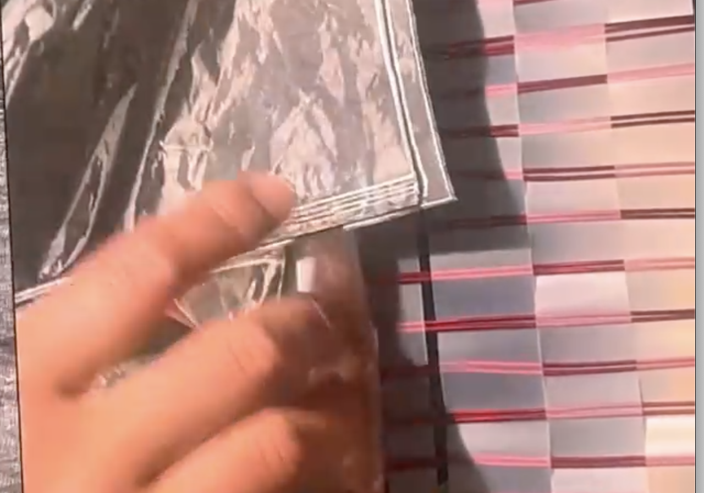

Handmade Images
Stills from Leslie Thornton's Handmade (2023)
By: Megan Robinson

“My own interest is in the outer edge of narrative where we are at the beginning of something else.”
“I am concerned with meaning, playing on the edge of it, finding an edge that is close to oblivion and can be transformative.”
"I see myself as writing with media, and I position the viewer as an active reader, not a consumer. The goal is not a product, but shared thought."